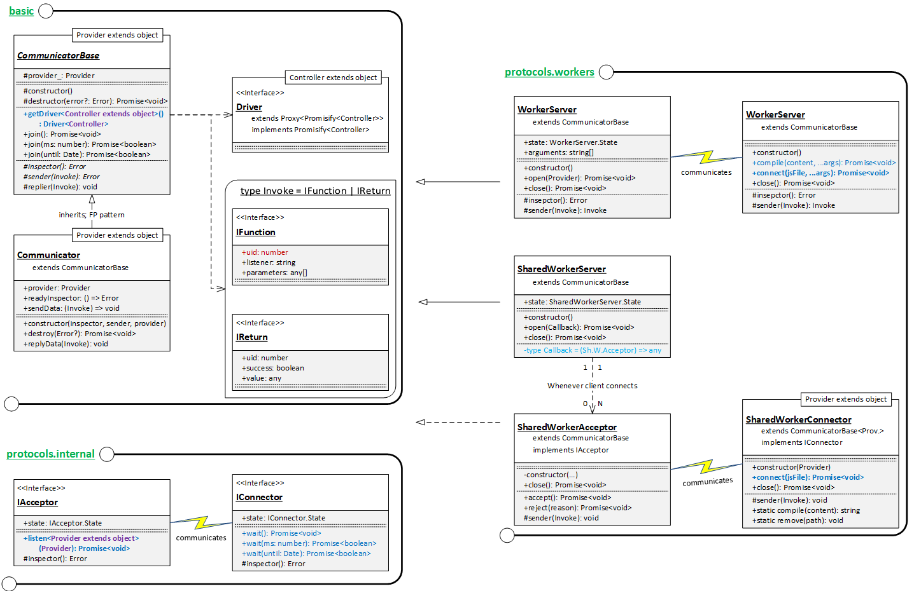

1. Outline
TGrid considers workers as network systems.
Worker is designed to support thread in browser. However, the Worker cannot share memory variable at all. The only way to interact with Worker and its parent is using MessagePort with inter-promised message (IPC, inter-process communication).
- https://developer.mozilla.org/en-US/docs/Web/API/Worker
- https://developer.mozilla.org/en-US/docs/Web/API/SharedWorker
- https://developer.mozilla.org/en-US/docs/Web/API/MessagePort

- Worker, it's a type of thread in physical level.
- Worker, it's a type of process in logical level.
- Worker, it's same with network system in conceptual level.
It seems like network communication, isn't it? That's the reason why TGrid considers Worker as a remote system and supports RFC (Remote Function Call) in such worker environments.
2. Components

| Supports | Web Browser | NodeJS |
|---|---|---|
| WorkerServer | O | O |
| WorkerConnector | O | O |
| SharedWorkerServer | O | X |
| SharedWorkerAcceptor | O | X |
| SharedWorkerConnector | O | X |
2.1. Dedicated Worker
2.1.1. WorkerServer
Worker Server.
The WorkerServer is a class representing a Worker server who can communicate with remote client, parent and creator of the Worker (anyway WorkerConnector), using RFC (Remote Function Call).
Unlike other servers, WorkerServer can accept only a client (WorkerConnector) because the Worker is dependent on its parent instance (web page, node or parent worker). Thus, WorkerServer does not have any acceptor and communicates with client (its parent) by itself.
To start communication with the remote client, call the WorkerServer.open() method with special Provider. After your business, don't forget terminating this worker using WorkerServer.close() or let connector to close itself. If you don't terminate it, then vulnerable memory and communication channel would be kept and it may cause the memory leak.
2.1.2. WorkerConnector
Worker Connector.
The WorkerConnector is a communicator class, who can create an Worker instance and communicate with it using RFC (Remote Function Call), considering the Worker as a remote system (WorkerServer).
You can create an Worker instance with [WorkerConnector.compile()])(https://tgrid.dev/api/classes/tgrid_protocols_workers.workerconnector.html#compile) or WorkerConnector.connect(https://tgrid.dev/api/classes/tgrid_protocols_workers.workerconnector.html#connect) method. Anyway, after creation of the Worker instance, the Worker program must open a server using the WorkerServer.open() method.
Note that, after your business, don't forget terminating the worker using WorkerConnector.close() or let server to close itself. If you don't terminate it, then vulnerable memory and communication channel would not be destroyed and it may cause the memory leak.
2.2. Shared Worker
TGrid also supports the SharedWorker.
Unlike the Dedicated Worker who supports both Web Browser and NodeJS, SharedWorker is only available in the Web Browser. If you want something similar like SharedWorker in NodeJS, I recommend you to using the Web Socket and open the Websocket server in your localhost.
2.2.1. SharedWorkerServer
SharedWorker server.
The SharedWorkerServer is a class representing a server in a SharedWorker environment. Clients connecting to the SharedWorkerServer would communicate with this server through SharedWorkerAcceptor objects using RFC (Remote Function Call).
To open the server, use the SharedWorkerServer.open() method with a callback function which would be called whenever a client has been connected. After your business, don't forget to closing the connection using one of them below. If you don't close that, vulnerable memory usage and communication channel would not be destroyed and it may cause the memory leak.
2.2.2. SharedWorkerAcceptor
SharedWorker acceptor for client.
The SharedWorkerAcceptor is a communicator class communicating with the remote client (SharedWorkerConnector) using RFC (Remote Function Call). The SharedWorkerAcceptor objects are always created by the SharedWorkerServer class whenever a remote client connects to its server.
To accept connection and start interaction with the remote client, call the SharedWorkerAcceptor.accept() method with special Provider. Also, don't forget to closing the connection after your business has been completed.
2.2.3. SharedWorkerConnector
SharedWorker Connector
The SharedWorkerConnector is a communicator class, who can connect to an SharedWorker instance and communicate with it using RFC (Remote Function Call), considering the SharedWorker as a remote system (SharedWorkerAcceptor).
You can connect to an SharedWorker instance with SharedWorkerConnector.connect() method. If the SharedWorker instance does not exist yet, a new SharedWorker instance would be newly created. After the creation, you have to let the SharedWorker program to open a sever using the SharedWorkerServer.open() method. Your connection would be linked with a SharedWorkerAcceptor object in the server.
After your business has been completed, you've to close the SharedWorker with the SharedWorkerConnector.close method or let server to close itself. If you don't close that, vulnerable memory usage and communication channel would not be destroyed and it may cause the memory leak.
3. Examples
3.1. Imitate Thread
With TGrid and RFC (Remote Function Call), you can imitate thread although Worker in JS does not support the thread in logical level. If you are familiar with TSTL, even critical sections could be imitated.
- Thread: TGrid & RFC
- Critical Section: +TSTL
Thread supporting library in TSTL
- ConditionVariable
- mutexes
- safety lockers
- experimental
- global functions
thread/child.ts
import { WorkerServer } from "tgrid/protocol/worker";
import { Driver } from "tgrid/components";
import { Mutex, sleep_for } from "tstl/thread";
import { randint } from "tstl/algorithm";
interface IController
{
mutex: Mutex;
print(character: string): void;
}
async function main(character: string): Promise<void>
{
// PREPARE SERVER & DRIVER
let server: WorkerServer = new WorkerServer();
let driver: Driver<IController> = server.getDriver<IController>();
// REMOTE FUNCTION CALLS
await driver.mutex.lock();
{
// RANDOM SLEEP -> SEQUENCE WOULD BE SHUFFLED
await sleep_for(randint(50, 100));
// PRINT A LINE WITH REPEATED LETTERS
for (let i: number = 0; i < 20; ++i)
{
await driver.print(character); // PRINT A LETTER
await sleep_for(randint(50, 100)); // RANDOM SLEEP
}
await driver.print("\n");
}
await driver.mutex.unlock();
// CLOSE THE SERVER (WORKER)
await server.close();
}
main(randint(0, 9) + "");
thread/index.ts
import { WorkerConnector } from "tgrid/protocols/workers";
import { Vector } from "tstl/container";
import { Mutex } from "tstl/thread";
import { Latch } from "tstl/thread/experimental";
// FEATURES TO PROVIDE
namespace provider
{
export var mutex = new Mutex();
export function print(str: string): void
{
process.stdout.write(str);
}
}
async function main(): Promise<void>
{
let workers: Vector<WorkerConnector<typeof provider>> = new Vector();
//----
// CREATE WORKERS
//----
for (let i: number = 0; i < 4; ++i)
{
// CONNECT TO WORKER
let w = new WorkerConnector(provider);
await w.connect(__dirname + "/child.js");
// ENROLL IT
workers.push_back(w);
}
//----
// WAIT THEM TO BE CLOSED
//----
// PREPARE LATCH
let latch: Latch = new Latch(4);
// JOIN CONNECTIONS TO LATCH
for (let w of workers)
w.join().then(() => latch.arrive());
// JOIN ALL CONNECTIONS
await latch.wait();
}
main();
11111111111111111111 88888888888888888888 44444444444444444444 33333333333333333333
3.2. Composite Calculator with compilation
In TGrid, connecting to an WorkerServer with compilation is also possible. When compilation, the JS code to be the WorkerServer must be bundled like below example code.
internal files
compiler/child.ts
import { WorkerServer } from "tgrid/protocols/workers";
import { CompositeCalculator } from "../../providers/Calculator";
async function main(): Promise<void>
{
let server: WorkerServer<CompositeCalculator> = new WorkerServer();
await server.open(new CompositeCalculator());
}
main();
compiler/index.ts
import { WorkerConnector } from "tgrid/protocols/workers";
import { Driver } from "tgrid/components";
import { ICompositeCalculator } from "../../controllers/ICalculator";
import { Bundler } from "../../utils/Bundler";
import * as fs from "fs";
const ORIGIN = __dirname + "/child.js";
const BUNDLE = __dirname + "/child.bundle.js";
async function main(): Promise<void>
{
//----
// COMPILIATION
//----
// BUNDLE child.js -> child.bundle.js
await Bundler.bundle(ORIGIN, BUNDLE);
// READ THE SOURCE CODE
let content: string = fs.readFileSync(BUNDLE, "utf8");
// OPEN WORKER WITH COMPILATION
let connector: WorkerConnector = new WorkerConnector();
await connector.compile(content);
//----
// CALL REMOTE FUNCTIONS
//----
// GET DRIVER
let calc: Driver<ICompositeCalculator> = connector.getDriver<ICompositeCalculator>();
// FUNCTIONS IN THE ROOT SCOPE
console.log("1 + 6 =", await calc.plus(1, 6));
console.log("7 * 2 =", await calc.multiplies(7, 2));
// FUNCTIONS IN AN OBJECT (SCIENTIFIC)
console.log("3 ^ 4 =", await calc.scientific.pow(3, 4));
console.log("log (2, 32) =", await calc.scientific.log(2, 32));
try
{
// TO CATCH EXCEPTION IS STILL POSSIBLE
await calc.scientific.sqrt(-4);
}
catch (err)
{
console.log("SQRT (-4) -> Error:", err.message);
}
// FUNCTIONS IN AN OBJECT (STATISTICS)
console.log("Mean (1, 2, 3, 4) =", await calc.statistics.mean(1, 2, 3, 4));
console.log("Stdev. (1, 2, 3, 4) =", await calc.statistics.stdev(1, 2, 3, 4));
//----
// TERMINATE
//----
await connector.close();
}
main();
1 + 6 = 7 7 * 2 = 14 3 ^ 4 = 81 log (2, 32) = 5 SQRT (-4) -> Error: Negative value on sqaure. Mean (1, 2, 3, 4) = 2.5 Stdev. (1, 2, 3, 4) = 1.118033988749895
3.3. Hierarchical Calculator
Let's make the composite calculator again, but change it something different; hierarchical-calculator. The composite calculator had partial calculators (scientific & statistic) as inline objects. The new hierarchical-calculator would change the partial calculators to be independent remote systems.
| Composite Calculator | Hierarchical Calculator |
|---|---|
 |
 |
Strength of TGrid
The composite-calculator has been repeated for four times; Basic Concepts, Web Socket version, Worker version and here hierarchical version.
The reason why repeating same project again and again is to demonstrate strengh of TGrid; change of protocol or (physical) network relationship does not affect to business logic. Look at the below code and compare with it Websocket version. Only difference between them is the connection part. Except the connection part, three programs are similar. Business logic (core logic of the program, composite-calculator) is exactly same.
With TGrid, you can keep your business logic. The business logic is perfectly independent with network; which protocol is used? how (physhical) network relationship exists? This is TGrid.
internal file
hierarchical-calculator/scientific.ts
import { WorkerServer } from "tgrid/protocols/workers";
import { Scientific } from "../../providers/Calculator";
async function main(): Promise<void>
{
let server: WorkerServer<Scientific> = new WorkerServer();
await server.open(new Scientific());
}
main();
hierarchical-calculator/statistics.ts
import { WorkerServer } from "tgrid/protocols/workers";
import { Statistics } from "../../providers/Calculator";
async function main(): Promise<void>
{
let server: WorkerServer<Statistics> = new WorkerServer();
await server.open(new Statistics());
}
main();
hierarchical-calculator/calculator.ts
import { WorkerServer, WorkerConnector } from "tgrid/protocols/workers";
import { Driver } from "tgrid/components";
import { SimpleCalculator } from "../../providers/Calculator";
import { IScientific, IStatistics } from "../../controllers/ICalculator";
class HierarchicalCalculator extends SimpleCalculator
{
// REMOTE CALCULATOR
public scientific: Driver<IScientific>;
public statistics: Driver<IStatistics>;
}
async function get<Controller extends object>
(path: string): Promise<Driver<Controller>>
{
// DO CONNECT
let connector = new WorkerConnector();
await connector.connect(__dirname + "/" + path);
// RETURN DRIVER
return connector.getDriver<Controller>();
}
async function main(): Promise<void>
{
// PREPARE REMOTE CALCULATOR
let calc = new HierarchicalCalculator();
calc.scientific = await get<IScientific>("scientific.js");
calc.statistics = await get<IStatistics>("statistics.js");
// OPEN SERVER
let server = new WorkerServer();
await server.open(calc);
}
main();
hierarchical-calculator/index.ts
import { WorkerConnector } from "tgrid/protocols/workers";
import { Driver } from "tgrid/components";
import { ICompositeCalculator } from "../../controllers/ICalculator";
async function main(): Promise<void>
{
//----
// PREPARATIONS
//----
// DO CONNECT
let connector: WorkerConnector = new WorkerConnector();
await connector.connect(__dirname + "/calculator.js");
// GET DRIVER
let calc: Driver<ICompositeCalculator> = connector.getDriver<ICompositeCalculator>();
//----
// CALL REMOTE FUNCTIONS
//----
// FUNCTIONS IN THE ROOT SCOPE
console.log("1 + 6 =", await calc.plus(1, 6));
console.log("7 * 2 =", await calc.multiplies(7, 2));
// FUNCTIONS IN AN OBJECT (SCIENTIFIC)
console.log("3 ^ 4 =", await calc.scientific.pow(3, 4));
console.log("log (2, 32) =", await calc.scientific.log(2, 32));
try
{
// TO CATCH EXCEPTION IS STILL POSSIBLE
await calc.scientific.sqrt(-4);
}
catch (err)
{
console.log("SQRT (-4) -> Error:", err.message);
}
// FUNCTIONS IN AN OBJECT (STATISTICS)
console.log("Mean (1, 2, 3, 4) =", await calc.statistics.mean(1, 2, 3, 4));
console.log("Stdev. (1, 2, 3, 4) =", await calc.statistics.stdev(1, 2, 3, 4));
//----
// TERMINATE
//----
await connector.close();
}
main().catch(exp =>
{
console.log(exp);
});
1 + 6 = 7 7 * 2 = 14 3 ^ 4 = 81 log (2, 32) = 5 SQRT (-4) -> Error: Negative value on sqaure. Mean (1, 2, 3, 4) = 2.5 Stdev. (1, 2, 3, 4) = 1.118033988749895